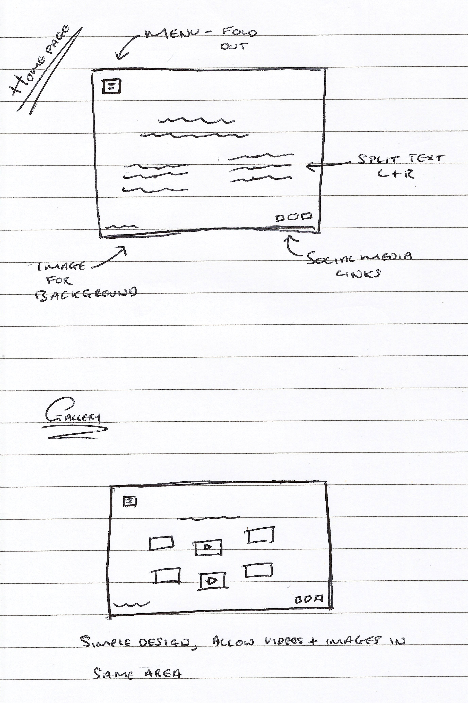
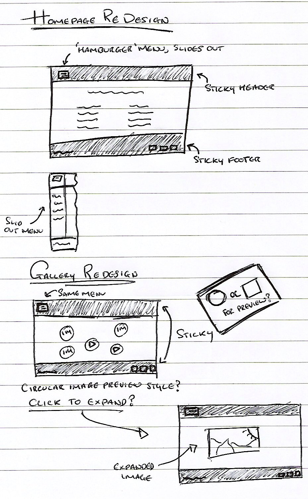
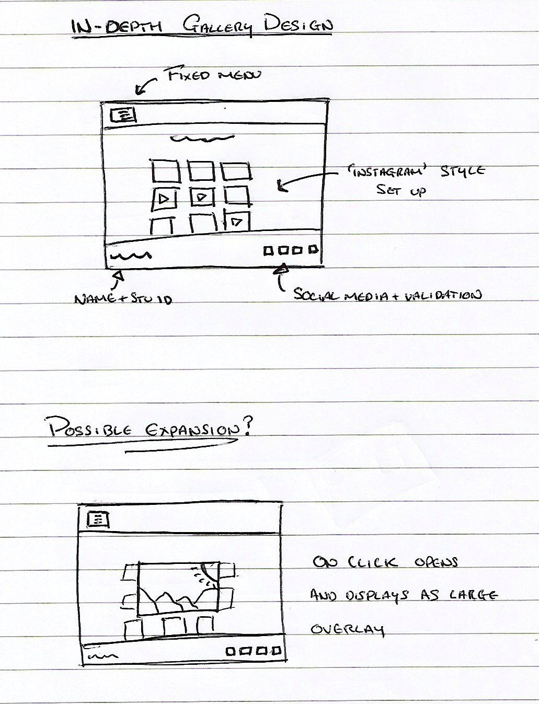
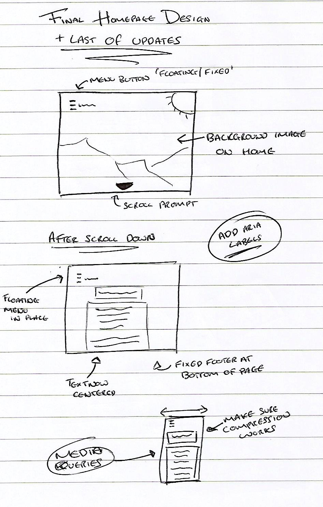

Week 1 - Introduction to WebF1
In week 1 it was mainly based around finding out how much we knew about the subject of web foundation. I found setting up the VM Server was interesting as it was my first time and also found choosing a text editor difficult as I have no idea what I am initially looking for in an editor as I have never used one before.
When writing about the web awards I felt like I had to really think about a website I find inspiring as I have never thought about a site like that before, I think of the internet as a place to find things and not as somewhere where I feel an emotional connection to sites.
Week 2 - Introduction to Markup
This week we started up our servers and did some simple HTML work. I created a web page using sublime and then used my web server to upload it and view it. It was only extremely simple (a few lines of text) but acted as a good start to play with. I then researched into different tags that were possible to use in HTML and implemented a few to see what I could change in my website.
Week 3 - Seperating Form and Content
This week we have began experimenting with CSS as a way to customise and design our websites in HTML5. The advantage with using CSS is that I can edit my webpage as much as I like and if I don’t like the style I can simply write a new CSS and change it over. After playing and editing with my website I found that the HTML and CSS pages are completely separate and that you must save each file to get it to apply to my website. I changed the colours and background of my site and also added a border. Finally I also added a footer which says my name and student number.
Week 4 - Academic Writing
This week we began working on our literature reviews by starting our research and using the resources available to us to begin reading up on different pieces of literature relevant to our projects.
Below is a list of a few different and interesting sources I discovered:
- Cornell University - What is sustainable computing?
- Open Source Cloud Computing For Sustainable IT Development - Vangelski/Ljupco
- Sustainable Computing: Informatics and Systems (Journal all volumes)
- A Green Software Development Life Cycle for Cloud Computing - Chauhan/Sitin Singh/Saxena/Ashutosh
- How Environmentally Sustainable is Cloud Computing and Storage?
- Google: Community Cloud Computing Alexandros Marinos, Gerard Briscoe PDF
- Benefits of Cloud Computing for Business
- Success Factors for Deploying Sustainable Cloud Computing
- Review of Cloud Computing in Business
Week 5 - Continuing the Literature Review
This week we continued to work on our literature reviews by doing more research and reading into our chosen topic and some of the articles that we had found. I also looked at some other previously written literature reviews and scanned through those to get a better idea of what was expected of me. I also began work on a mind map to congregate all of these ideas into one place which was simple to read.
Week 6 -Introducing Media to HTML
In this week's tutorial I had to begin to understand how to use HTML markup to allow me to introduce pictures and video to my code and how to implement it so it would be viewable in my webpage. I did this by downloading images and using the correct tags (saved the file to my docs) which allowed me to place an image onto my site. From here I then applied the same thing to a short piece of video onto my site. This proved slightly more difficult as I had to be able to convert the video into slightly more appropriate doctypes so that they would be viewable across multiple different browsers.
In Your Worklog Describe the Current State of Browser Support for Different Codecs
In browsers today I think the overall compatibility is reasonably good although it does have some issues especially from a developer standpoint of being able to get your media to be correctly viewed on a variety of different browsers. Although these are small problems in the way of trying to get everything to work together correctly, due to the implementation of HTML 5 it has become much easier to be able to get all of these things to work in harmony.
Week 8 - Design
In this practical we were given the task of taking a website (already provided) and thinking about the design of it and from there filling in a form based around the design of this website. We had to think about the purpose and the target audience of the site as well as the technical aspects of the site and how it worked and if it did so efficiently and cleanly. This translates to the building of our own sites and how we have to think about the way we wish to present our site and whether it would be appropriate for the target audience we wish to see it (in the case of our assignment this will be our peers).
Week 9 - Standards
This week in our lecture Jacek had a talk about different standards that we use on the web and from there, the standards that then apply to HTML5 and how they define the way we work with it. Therefore in this lecture I researched into different tags used in HTML5 a bit deeper and then looked into using backgrounds and borders as well as how to control these slightly more in the way they are styled (See: http://www.w3.org/TR/css3-background/ for borders and editing them). We also used an online validator (validator.w3.org), this allowed me to paste my code into it and for it to tell me whether my code is up to standard or if there are a variety of things wrong with it that I may not of noticed in the first place. It is important to validate your code often as if you get too far into code then it can become irritating and time consuming to go through and edit all your code.
Week 10 - Editors
This week, Jacek and Rich took a lecture that talked about the editor Atom and all the different possible uses it has and how it is important to really get to know your text editor and make it your own in order to increase productivity in your coding. Once downloaded I opened Atom and played with the settings and themes to see which one worked for me as well as editing the font as well so I felt like I could work with it. After this I then installed a few packages to make my editing easier and to try and work on my overall efficiency within Atom.
Finally I finished updating my work logs so that I can then begin working on a webpage that will allow me to display these for my next assignment. Throughout the next week I will continue to work on and develop this page so that I get a good start on it. As well as this it should also help my overall productivity in coding and hopefully get me working a lot faster.
Week 11 - Basic Scripting
In this week Jack introduced us to basic web scripting by showing us a piece of code used to draw a stickman and then showed us how to develop it from there in a variety of ways until the point where there was an online multiplayer stickman game based around collecting diamonds.
In the practical we were able to then work and develop our own stick man individually and work on our basic scripting skills overall.
In relation to the assignment, I did not manage to make much more progress except getting basic page parts set up such as the head and making sure the pages I was creating were set to the right format.
Week 12 - Basic PHP
This week we focused on some basic PHP as we were introduced to it for the first time. It was an extremely simple exercise where we just focused on simple “Hello World” like programs as well as using PHP to create simple arithmetic.
This week I made considerable progress on my site with being able to create 2 simple pages that allow me to display as well as setting up my CSS page allowing me to begin designing my site and changing it to suit my style currently. Also I began research into how to create some sort of dropdown menu into my site with it so far looking like I may have to use bootstrap to implement it.
I also began designing on paper some types of ideas for my homepage and gallery page so I have some sort of guide when I decide I am ready to begin building them.
Week 13+14 - Usability
The next 2 weeks were both based around the usability of our sites and how websites are used and designed in ways to make the experience as easy and simple as possible for the user to use. We did this by thinking about things such as what we possibly look for in a website and what other people may look for (such as how easy it is to navigate).
We then spoke about file structures when designing our sites and the overall design of our pages to make sure that they flow and are easy to use and understand for not only ourselves but also for our target audiences of our sites.
These lectures actually helped me heavily when thinking about the design of my site and I ended up completely scrapping most of my current ideas including all of my CSS allowing me to redesign the way my site looked as well as making the color scheme much more accessible.
Once again I did more research into the drop down menu after scrapping most of my page as bootstrap would also not allow me to customise my page as much as I would like, so I am therefore thinking of a way of implementing this using just HTML5 and CSS.
Week 15 - Accessibility
This week we focused on website accessibility and what that means in regards to our site. We spoke about how we can make it easier for people with potential difficulties using our site who may suffer from physical and mental ailments. This included older people who may not be able to use peripherals correctly to people who may be color blind in some way and may not be able to see our sites correctly or as we intended.
We also spoke about guidelines we can follow to help us to make our sites more usable for the majority of people.
In our practical we used a variety of modified glasses and other pieces of equipment to simulate potential ailments our users may have that could affect the way our site would be accessible to them.
Following on from last week I was still in the process of re-designing my site to make it much easier to use. Although I was struggling to find a way of making my site better through usability and accessibility I was able to design a menu finally that was able to work as I wanted it to by allowing the user to just roll over the icon and select the page they want to access.
Later this week I finally decided on an appropriate and was able to implement it into my site and I planned to begin work on implementing a gallery page sometime next week.
Week 16 - Reading Week and Website Focus
This week we had a reading week so I spent all my time I could allocate on working on my website to make it ready for submission next week. The first thing I did was implement my gallery page which involved me researching a bit more into CSS and HTML5 to find how they would display these images and how I would be able to get them to do what I wanted them to as shown in my paper drawn plans.
After this had been implemented I had a coursemate mock mark my site so that I could get some idea on what I had left to implement into my site and discovered that it was not much and that I would be able to probably finish my site this week and have it ready to upload and be submitted.